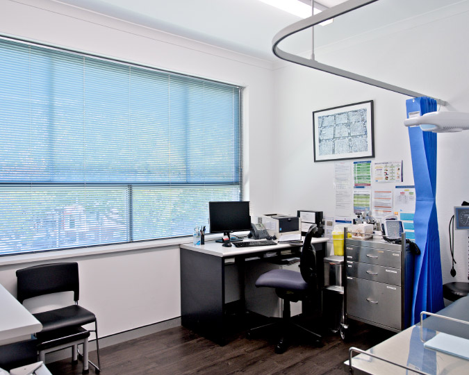
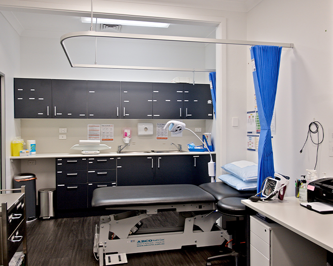

Bookings
Our aim is to provide a same day appointment wherever possible
We reserve several appointments each day for urgent matters and on the day consultations. Please indicate to our reception team if you require an urgent appointment.
Our standard appointments are booked for 15 minutes. Please request a longer appointment if you have several issues to discuss. This will help us to run on time and not keep you waiting.
Procedures such as excisions and Care Plans for Chronic Disease Management require longer appointments. Please indicate this to our reception team at the time of booking.
Garema Place Surgery uses an SMS system to remind you of the date and time of your appointment.
If you are unable to attend your appointment we would appreciate a telephone call at least 2 hours prior to your appointment time.
If you have booked your appointment online cancellations can also be made through the online booking system. If you fail to attend your appointment, or cancel with less than 2 business hours notice the full consult fee will be charged. Repeated nonattendance without cancellation may result in a request to seek medical care with another Health Care Provider.
New patients are very welcome at Garema Place Surgery
New and existing patients are able to book appointments online via our website or by downloading the AMS Doc Connect app for your iPhone or iPad from the App Store.
Book Online →
Telehealth Consultation
Telehealth is convenient and appropriate if you are unwell and require isolation from others to prevent disease transmission.
We offer both video and telephone consultations.
Please be aware there may be no Medicare rebate for a Telehealth consult if you are a new patient or have not been to the practice in the last 12 months.
Telehealth Consultations →